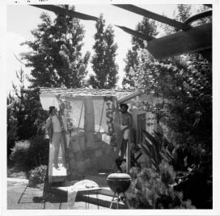

“SWAB JOB” okul şakası afişiyle
Evlat Edinilmesi
Paul Jobs 2. Dünya Savaşı’ndan sonra Sahil Güvenlik’ten terhis olunca tayfa arkadaşlarıyla bahse girdi. San Francisco’ya gelmişlerdi, gemileri orada terhis edilmişti ve Paul iki hafta içinde kendine evlenecek birini bulacağına bahse girdi. Sırım gibi, dövmeli bir motor makinistiydi, bir seksen boyundaydı, hafif James Dean’i andırıyordu. Ama Ermeni göçmenlerin iyi huylu kızı Clara Hagopian’la çıkması yakışıklılığı sayesinde olmadı. O akşam dışarı çıkmayı planlayan kızın arkadaş grubunda araba yoktu, oysa Paul ve arkadaşlarında bir tane vardı. Paul on gün sonra, 1946 Mart’ında Clara’yla nişanlanıp bahsi kazandı. Onlarınki mutlu bir evlilik olacaktı; 40 yıldan fazla sürdü, ölüm onları ayırana dek.
Paul Reinhold Jobs, Wisconsin’deki Germantown’da bulunan bir mandıra çiftliğinde büyümüştü. Babası alkolik olsa da ve onu bazen dövse de, Paul sert görünüşünün altında kibar ve sakin bir insan olarak yetişmişti. Liseyi yarım bıraktıktan sonra Orta Batı’da gezinip makinistlik yapmıştı, 19 yaşında da Sahil Güvenlik’e katılmıştı, oysa yüzme bilmiyordu bile. USS M. C. Meigs gemisinde görevlendirilmişti ve savaşın çoğunda İtalya’ya, General Patton’a asker taşımışlardı. Makinistlik ve ateşçilik yeteneğiyle takdir toplamıştı, ama arada sırada ufak tefek olaylara karıştığından rütbesi erlikten öteye gidememişti.
Clara New Jersey’de doğmuştu; ebeveyni 1915 Türk-Ermeni olayları sonrasında oraya göçmüşlerdi ve Clara çocukken San Francisco’nun Mission Bölgesi’ne yerleşmişlerdi. Clara’nın pek kimseye bahsetmediği bir sırrı vardı: Daha önce evlenmişti, ama kocası savaşta öldürülmüştü. Yani Paul Jobs’la çıktığı gün yeni bir hayata başlamaya hazırdı.
Savaş sırasında çoğu insan gibi onlar da yeterince heyecan yaşamışlardı ve artık sadece bir yere yerleşmek, çocuk yetiştirmek ve daha sakin bir hayat sürmek istiyorlardı. Paraları az olduğundan Wisconsin’e taşınıp birkaç sene Paul’ün ebeveyninin evinde kaldılar, sonra da Indiana’ya taşındılar ve Paul orada, International Harvester şirketinde makinistlik yapmaya başladı. Eski arabalarla uğraşmaya bayılıyordu ve boş zamanlarında onları alıp, elden geçirip satarak para kazanıyordu. Sonunda işini bırakıp tam gün ikinci el araba satıcılığı yapmaya başladı.
Clara’ysa San Francisco’yu seviyordu ve 1952’de kocasını oraya geri dönmeye ikna etti. Sunset Bölgesi’nde, Golden Gate Parkı’nın hemen güneyinde Pasifik’e bakan bir daire tuttular ve Paul bir finans şirketinde “icracılık” yapmaya, sahiplerinin borcunu ödemediği arabaları kilitlerini açarak toplamaya başladı. Ayrıca bu arabaların bazılarını satın alıp, onarıp satarak iyi para kazanıyordu.
Ancak hayatlarında bir eksiklik vardı. Çocuk istiyorlardı, ama Clara dış gebelik geçirmişti –döllenmiş yumurta uterus yerine fallop tüpüne yerleşmişti– ve artık kısırdı. Dolayısıyla 1955’te, evliliklerinin dokuzuncu yılında, bir çocuğu evlat edinmeye karar verdiler.
Paul Jobs gibi Joanne Schieble da Alman kökenli, köylü bir Wisconsin ailesindendi. Babası Arthur Schieble Green Bay civarından göç etmişti; orada karısıyla birlikte sahip olduğu bir vizon çiftliği vardı ve emlakçılıktan fotoğraf baskıcılığına dek çeşitli işlerde başarılı olmuştu. Özellikle kızının aşk ilişkileri konusunda son derece sertti ve onun ilk aşkını, –Katolik olmayan ressamı– hiç beğenmemişti. Dolayısıyla Joanne Wisconsin Üniversitesi’nde ihtisas yaparken Abdulfattah “John” Jandali adlı Suriyeli bir Müslüman asistana aşık olunca, babasının onu evlatlıktan reddetme tehdidini savurması şaşırtıcı değildi.
Jandali önde gelen bir Suriyeli ailenin dokuz çocuğunun en küçüğüydü. Petrol rafinerileri ve çeşitli şirketleri olan babası Şam’da ve Humus’ta geniş arazilere sahipti ve bir ara bölgedeki buğday fiyatlarını tamamen kontrolüne almıştı. Schieble ailesi gibi Jandaliler de eğitimi önemsiyorlardı; aile fertleri İstanbul’da veya Sorbonne’da eğitim almışlardı nesiller boyu. Abdulfattah Jandali Müslüman olmasına karşın bir Cizvit yatılı okuluna gönderilmişti ve Beyrut’taki Amerikan Üniversitesi’nden lisans diploması aldıktan sonra siyasal bilgiler yüksek lisansı ve öğretim asistanlığı yapmak üzere Wisconsin Üniversitesi’ne gelmişti.
1954 yazında Joanne, Abdulfattah’la birlikte Suriye’ye gitti. Humus’ta iki ay kaldılar ve orada Abdulfattah’ın ailesinden Suriye yemeklerini öğrendi. Wisconsin’e geri döndüklerinde hamile olduğunu keşfetti. İkisi de 23 yaşındaydılar, ama evlenmemeye karar verdiler. Joanne’in o sırada ölüm döşeğinde olan babası, onu Abdulfattah’la evlenirse evlatlıktan reddetmekle tehdit etmişti. O küçük Katolik cemaatinde kürtaj da kolay bir seçenek değildi. Bu yüzden Joanne 1955 başında San Francisco’ya gitti; bekâr annelere barınak sağlayan, bebeklerini doğurtan ve gizli evlat edinmeleri ayarlayan iyi kalpli bir doktor onu himayesine aldı.
Joanne’in bir koşulu vardı: Çocuğunu evlat edinecek insanlar üniversite mezunu olmalıydılar. Bu yüzden doktor bebeğin bir avukatla karısına verilmesini ayarladı. Ama oğlan doğduğunda –24 Şubat 1955–, seçilen çift kız çocuk istediklerine karar verip caydılar. Dolayısıyla doğan çocuk, bir avukatın değil mekaniğe düşkün, liseden terk bir adamla kitapçılık yapan dürüst karısının oğulları oldu. Paul ve Clara yeni bebeklerine Steven Paul Jobs adını verdiler.
Ancak Joanne bebeğinin ebeveyninin üniversite mezunu olmasını istiyordu hâlâ. Çocuğun lise mezunu bile olmayan bir çifte verildiğini öğrenince evlatlık verme belgelerini imzalamayı reddetti. Bu uzlaşmazlık haftalarca sürdü; bebek Steve, Jobs’ların evine yerleştirildiğinde bile. Sonunda Joanne pes etti, ama ancak Jobs’lardan çocuk için para biriktirip onu üniversitede okutacaklarının sözünü aldıktan sonra –hatta bu konuda imzalı taahhüt aldı–.
Joanne’in gerekli belgeleri imzalamak istememesinin bir sebebi daha vardı. Babası ölmek üzereydi ve Joanne hemen ardından Jandali’yle evlenmeyi planlıyordu. Evlendikten sonra çocuklarını geri alabilmeyi umuyordu –sonradan akrabalarına bunu, bazen ağlayarak söyleyecekti–.
Arthur Schieble Ağustos 1955’te, çocuğun resmen evlat edinilmesinden birkaç hafta sonra öldü. Joanne ve Abdulfattah Jandali’yse o seneki Noel’in hemen ardından, Green Bay, St. Philip’deki Apostle Katolik Kilisesi’nde evlendiler. Jandali ertesi sene uluslararası ilişkiler doktorasını tamamladı ve sonra bir çocukları daha oldu, Mona adını verdikleri bir kız.
Joanne’in 1962’de Jandali’den boşandıktan sonra yaşadığı maceraperest gezgin hayatını kızı –sonradan büyük bir romancı olacak olan Mona Simpson– Burası Olmasın Da adlı dokunaklı romanında işleyecekti. Ama Steve gizlilik içeren bir prosedürle evlatlık verildiğinden, birbirlerini bulmaları yirmi yıl sürecekti.
Steve Jobs evlatlık olduğunu küçük yaştan beri biliyordu. “Ailem bu konuda gayet açık davrandı,” diye anlattı. Altı yedi yaşındayken evinin bahçesinde oturduğunu ve sokağın karşı tarafında oturan kıza evlatlık olduğunu söylediğini net anımsıyordu. “Yani gerçek ailen seni istememiş mi?” diye sormuş kız. “Ahhhh! Kafamda şimşekler çaktı,” dedi Jobs. “Ağlayarak eve koştuğumu hatırlıyorum. Annemle babam dediler ki, ‘Hayır, anlamalısın.’ Çok ciddiydiler, gözlerimin içine bakıyorlardı. ‘Seni özellikle seçtik,’ dediler. İkisi de bunu söylediler ve yavaşça tekrarladılar. Her kelimenin üstüne basa basa söylediler.”
Terk edilmek. Seçilmek. Özel olmak. Bu kavramlar Jobs’ın benliğinin, kendine bakışının parçası haline geldiler. En yakın arkadaşları, doğduktan sonra terk edilmenin onda yara izleri bıraktığını düşünüyorlar. “Bence yaptığı her şeyde mutlak kontrol sahibi olma arzusu kişiliğinden ve doğduktan sonra terk edilmiş olmasından kaynaklanıyor,” diyor uzun süreli iş arkadaşı Del Yocam. “Ortamını kontrol etmek istiyor ve ürünü kendisinin bir uzantısı olarak görüyor.” Üniversiteden hemen sonra Jobs’la yakınlık kuran Greg Calhoun ise başka bir sebep görüyor. “Steve terk edilmiş olmasından ve bunun yol açtığı acıdan epey bahsetti bana,” diyor. “Bu onu bağımsızlaştırdı. Farklı bir ritme uymaya başladı ve bunun sebebi, doğduğu dünyadan farklı bir dünyada yaşadığını bilmesiydi.”
Jobs sonradan, tam da biyolojik babasının kendisini terk ettiği yaştayken (23), kendisi de bir çocuk yapıp terk edecekti. (Kızın velayetini sonradan üstlendi.) O çocuğun annesi Chrisann Brennan, evlatlık verilmenin Jobs’ın “içini kırık cam parçalarıyla doldurduğunu” ve bazı davranışlarının anlaşılmasını kolaylaştırdığını söylüyor. 1980’lerin başlarında Apple’da Jobs’la yoğun bir şekilde birlikte çalışan Andy Hertzfeld, hem Brennan’la hem de Jobs’la yakınlığını koruyan az sayıda kişiden biri. “Steve’le ilgili asıl mesele, neden bazen kendini tutamayıp da bazı insanlara içgüdüsel olarak, son derece zalimce ve zarar verici davranabildiği,” diyor. “Bunun sebebi doğduktan sonra terk edilmesi. Altta yatan asıl mesele, Steve’in hayatındaki terk edilmişlik olgusu.”
Jobs buna inanmıyor. “Terk edildim diye çok çalıştığımı, başarılı olursam annemle babamın beni geri isteyeceklerini umduğumu filan düşünenler var, ama bu çok saçma,” diyor ısrarla. “Evlatlık olduğumu bilmek kendimi daha özgür hissetmemi sağlamış olabilir, ama kendimi asla terk edilmiş hissetmedim. Ebeveynim kendimi özel hissetmemi sağladılar hep.” Sonradan, Paul ve Clara Jobs’tan “üvey” ailesi diye bahsedenlere, hatta “gerçek” ailesi olmadığını ima edenlere bile kızacaktı hep. “Onlar %1000 gerçek ailemdi,” diyor. Biyolojik ailesindense kısaca bahsediyor: “Onlar benim sperm ve yumurta bankamdılar – ağır konuşmuyorum, öyleydiler sadece, bir sperm bankası meselesiydi o kadar.”
Silikon Vadisi
Paul ve Clara Jobs’ın yeni oğullarına sağladıkları çocukluk, 1950’lerin sonlarında pek çok açıdan tipikti. Steve iki yaşındayken Patty adlı bir kızı evlat edindiler ve bir banliyö evine taşındılar. Paul’ün çalıştığı finans şirketi CIT onu Palo Alto’daki şubesine atamıştı, ama o bölge çok pahalı olduğundan, hemen güneydeki daha ucuz bir kasaba olan Mountain View’deki bir parsellenmiş araziye yerleştiler.
Paul Jobs orada oğluna mekanik ve araba sevdasını aşılamaya çalıştı. “Steve, bu artık çalışma tezgâhın,” dedi, garajlarındaki masanın bir kısmını çizgiyle ayırarak. Jobs babasının zanaatkârlığından etkilendiğini anımsıyor. “Babamın tasarım anlayışının epey iyi olduğunu düşünüyordum,” diyor, “çünkü her şeyi yapabiliyordu. Dolaba ihtiyacımız varsa bir tane yapıyordu. Çitimizi yaparken bana bir çekiç verdi, onunla birlikte çalışayım diye.”
Elli yıl sonra o çit hâlâ Mountain View’deki evin arka ve yan bahçesini çevreliyor. Jobs bana onu gösterirken kazıkları okşadı ve babasının iyice bellettiği bir dersi hatırladı. Babası dolapların ve çitlerin arka tarafları gizli kalacak olsa bile, onları düzgün yapmanın öneminden bahsetmişti. “Düzgün çalışmayı seviyordu. Görülmeyecek kısımları bile önemsiyordu.”
Babası eski arabaları elden geçirip satmayı sürdürdü ve garajı favorilerinin fotoğraflarıyla donattı. Oğluna tasarım ayrıntılarını gösteriyordu – astarları, havalandırma deliklerini, krom çamurlukları, koltuk kızaklarını. Her gün işten çıkınca blucin tulumunu giyip garaja çekiliyordu, Steve de genellikle peşinden geliyordu. “Motorlardan biraz anlamasını sağlarım diye düşünmüştüm, ama ellerini kirletmeyi hiç istemiyordu,” diye sonradan anımsayacaktı Paul. “Mekanik şeylere asla çok ilgi duymadı.”
Jobs kaportanın altında çalışmayı pek de cazip bulmuyordu aslında. “Araba tamirciliğiyle ilgilenmiyordum. Ama babamla takılmak hoşuma gidiyordu.” Evlatlık olduğunun bilincine vardıkça babasına giderek daha fazla bağlanıyordu. Jobs sekiz yaşlarındayken bir gün babasının Sahil Güvenlik’teki zamanlarından kalma bir fotoğrafını buldu. “Makine dairesindeydi ve gömleğini çıkarmıştı, James Dean’e benziyordu. Çocukların Vay be dedikleri anlardan biriydi. Vay canına, ebeveynim bir zamanlar gençmişler ve gayet hoş görünüyorlarmış.”
Babası arabalardan bahsederken Steve’i elektronikle tanıştırdı. “Elektronikten çok anlamıyordu, ama otomobillerde ve tamir ettiği başka şeylerde sık sık karşılaşmıştı. Bana elektroniğin temellerini gösterdi ve epey ilgilendim.” Daha da ilginci yedek parça aramaya çıktıkları zamanlardı. “Her hafta sonu hurdalığa giderdik. Jeneratörler, karbüratörler, her türden parça arardık.” Babasının tezgâhta pazarlık yapmasını anımsıyordu. “Sıkı pazarlıkçıydı, çünkü parçaların gerçek fiyatını tezgâhtaki adamlardan daha iyi biliyordu.” Jobs’lar Steve’i evlat edinirken verdikleri sözü bu sayede tutabildiler. “Babam bir Ford Falcon’u veya başka bir marka çalışmayan döküntü bir arabayı 50 dolara alıp, üzerinde birkaç hafta çalışıp 250 dolara satıyordu – ve bundan Amerikan Vergi Dairesi’nin haberi olmuyordu; böyle böyle üniversite param birikti.”
Jobs’ların 268 Diablo adresindeki evini ve mahalledeki diğer evleri yapan emlâk müteahhidi Joseph Eichler’in şirketi, 1950 ila 1974’te California’daki çeşitli parselasyon alanlarında 11,000’den fazla ev inşa etmişti. Frank Lloyd Wright’ın “sıradan” Amerikalılara yönelik sade, modern ev vizyonundan etkilenen Eichler’in inşa ettiği ucuz evlerde cam duvarlar, bakkal tavanları, görünür direkler ve kirişler, beton plak döşemeler ve bol bol sürme cam kapı vardı. “Eichler iyi iş çıkardı,” dedi Jobs mahalledeki yürüyüşlerimizden birinde. “Evleri kullanışlı, ucuz ve iyiydi. Düşük gelirli insanlara temiz tasarımlı, sade evler sundu. Bazı ayrıntılar muhteşemdi, örneğin yerden ısıtma olması. Çocukluğumdan hatırlıyorum, halılar çok güzel ısınıyordu.”
Jobs Eichler’in evlerine duyduğu hayranlığın kitle pazarına yönelik keskin tasarımlı ürünler tasarlama arzusunu aşıladığını söyledi. “Gerçekten muhteşem bir tasarımla basit işlevselliği makul fiyatlı bir ürün üstünde birleştirebilmeyi seviyorum,” dedi, Eichler’in evlerinin temiz zarafetinden bahsederken. “Apple’ın ilk vizyonu buydu. İlk Mac’te yapmaya çalıştığımız buydu. iPod’da yapmayı başardığımız buydu.”
Jobs’ların evinin karşısında başarılı bir emlâkçı oturuyordu. “Çok akıllı bir adam değildi,” diye anımsıyordu Jobs, “ama servet kazanıyor gibiydi. Bu yüzden babam ‘Bunu ben de yapabilirim,’ diye düşündü. Çok çalıştığını hatırlıyorum. Gece kursuna gitti, lisans testini geçti ve emlâkçılığa başladı. Sonra piyasada kriz çıktı.” Böylece, Steve ilkokuldayken aile bir yıl kadar para sıkıntısı çekti. Annesi bilimsel aletler üreten bir şirket olan Varian Associates’te muhasebecilik yapmaya başladı, ayrıca ikinci bir ipotek kredisi aldılar. Steve dördüncü sınıftayken bir gün öğretmeni ona “Evrende anlamadığın nedir?” diye sordu. Jobs “Babamın neden durup dururken parasız kaldığını anlamıyorum,” diye yanıt verdi. Yine de babasının daha iyi bir satıcı olmak uğruna yaltakçılık veya üçkâğıtçılık yapmamasından epey gurur duyuyordu. “Emlâk satmak için insanlara yalakalık yapmak gerekiyordu, ama babam bunda iyi değildi, hamurunda yoktu. Bu yönünü takdir ediyordum.”
Babası aynı zamanda sakin ve kibar mizaçlıydı, ki oğlu ileride onun bu yönlerini örnek almasa da gururla övecekti. Babası tavır sahibiydi.
Mahallede bir mühendis oturuyordu, Westinghouse’ta fotoelektrik hücreler üstünde çalışıyordu. Bekârdı, beatnik tiplerdendi. Bir kız arkadaşı vardı. Kız bazen bana bakıcılık yapıyordu. Babam da annem de çalıştığından, okuldan sonra mühendisin evine gidip birkaç saat kalıyordum. Adam birkaç kez sarhoş olup kıza vurdu. Kız bir gece bize geldi, korkudan ödü patlamıştı; sonra adam da gelince babam onun karşısına dikildi – kız burada ama sen giremezsin dedi. Öyle dimdik durdu. 1950’lerin güllük gülistanlık olduğunu düşünmekten hoşlanırız, ama o adam insanların hayatını karartan mühendislerden biriydi.
Mahalleyi Amerika’daki diğer binlerce cılız ağaçlı parselasyon alanından ayıran şey, tembellerin bile mühendisliğe meyilli olmalarıydı. “Buraya taşındığımızda şu köşelerin hepsinde kayısı ve erik ağaçları vardı,” diye anımsıyordu Jobs. “Ama askeri yatırımlar sayesinde bölge gelişmeye başlamıştı.” Jobs vadinin tarihini yalayıp yuttu ve kendi rolünün başlayacağı günlerin hayalini kurmaya başladı. Polaroid’den Edwin Land sonradan ona Eisenhower’ın kendisinden Sovyet tehdidinin gerçek boyutunu öğrenmek için U-2 casus uçağı kameraları üretmesine yardım etmesini istediğini söyledi. Metal kutulardaki filmler, Jobs’ın yaşadığı yerin yakınındaki NASA Ames Araştırma Merkezi’ne götürülmüştü. “Bir bilgisayar terminalini hayatımda ilk kez babam beni Ames merkezine götürünce gördüm,” dedi Jobs. “Sırılsıklam aşık oldum.”
1950’lerde civarda başka savunma müteahhitleri belirdi. Denizaltılar için balistik füzeler üreten Lockheed Füze ve Uzay Bölümü 1956’da, NASA merkezinin yanına kuruldu; bundan dört yıl sonra, Jobs’lar oraya taşındığında bölgede 20.000 kişi çalışıyordu. Birkaç yüz metre ötede Westinghouse füze sistemleri için tüpler ve elektrik transformatörleri üreten tesisler kurdu. “Yeni teknolojiler üreten bir sürü askeri şirket vardı,” diye anımsıyordu Jobs. “Orası gizemliydi ve yüksek teknoloji üretiyordu, dolayısıyla orada yaşamak çok heyecan vericiydi.”
Savunma endüstrileriyle birlikte teknolojiye dayalı güçlü bir ekonomi gelişti. Bunun kökeni 1938’e, Dave Packard’la yeni karısının Palo Alto’daki bir daireye taşınmalarına ve kısa süre sonra dairenin odunluğuna Packard’ın arkadaşı Bill Hewlett’ın yerleşmesine dayanıyordu. Binanın garajı vardı –garajlar ileride vadide hem faydalı hem de ikonik olacaktı– ve burada ilk ürünleri olacak ses osilatörünü üretene kadar çalışacaklardı. 1950’lere gelindiğinde Hewlett-Packard teknik cihazlar üreten, hızla büyüyen bir şirketti.
Neyse ki civarda garajlarına sığmaz olan girişimcilere göre bir yer vardı. Stanford Üniversitesi Mühendislik Fakültesi Dekanı Frederick Terman, özel şirketlerin öğrencilerin fikirlerini ticarileştirebilmesi için üniversite arazisinde 700 dönümlük bir endüstri parkı yaratarak bölgenin teknoloji devriminin beşiği haline gelmesine katkıda bulundu. Parkın ilk kiracısı Clara Jobs’ın çalıştığı Varian Associates’ti. “Terman’ın o muhteşem fikri, burada teknoloji endüstrisinin gelişmesine her şeyden fazla katkıda bulundu,” dedi Jobs. Jobs on yaşına geldiğinde HP’nin 9.000 çalışanı vardı ve mali istikrar isteyen her mühendisin çalışmak istediği başlıca şirketti.
Bölgenin gelişmesine katkıda bulunan en önemli teknoloji yarı iletkendi elbette. New Jersey’deki Bell Laboratuvarları’nda geliştirilen transistörün mucitlerinden biri olan William Shockley, Mountain View’e taşındı ve 1956’da o sıralar yaygın olarak kullanılan pahalı germanyumun yerine silikonla transistör üretecek bir şirket kurdu. Ama Shockley giderek istikrarsızlaşıp da silikonlu transistör projesinden vazgeçince sekiz mühendisi –en önemlileri Robert Noyce’la Gordon Moore’du– ayrılıp Fairchild Semiconductor’ı kurdular. Bu şirket büyüyüp 12.000 kişi çalıştırmaya başladı, ama 1968’de Noyce CEO olmayı başaramayınca bölündü. Noyce, Gordon Moore’la birlikte Integrated Electronics Co. adıyla tanınan bir şirket kurdu ve şirketin ismini zekice, Intel şeklinde kısalttılar. Üçüncü çalışanları Andrew Grove 1980’lerde şirketi hafıza çipleri yerine mikroişlemcilerde odaklayarak büyütecekti. Birkaç yıl sonra bölgede yarı iletken üreten elliden fazla şirket olacaktı.
Bu endüstrinin katlanarak büyümesi Moore’un meşhur bir keşfiyle bağlantılıydı; Moore 1965’te, bir çipe yerleştirilebilecek transistör sayısını temel alarak, entegre devrelerin hızına ilişkin bir grafik çizdi ve hızın iki senede bir ikiye katlandığını ve bu gidişatın sürmesinin beklenebileceğini gösterdi. Bu 1971’de, Intel eksiksiz bir CPU (merkezi işlem birimi) –Intel 4004– üretebildiğinde kanıtlandı ve bu birime “mikroişlemci” adını verdiler. Moore Yasası geçerliliğini günümüze dek genel olarak korudu ve güvenilir performans-fiyat tahmini, Steve Jobs ve Bill Gates de dahil olmak üzere iki nesillik genç girişimcilerin yenilikçi ürünlerinin maliyetlerini kestirebilmelerini sağladı.
Haftalık ticaret gazetesi Electronic News’ün köşe yazarı Don Hoefler’in Ocak 1971’de “Silikon Vadisi ABD” adlı bir yazı dizisine başlamasıyla birlikte çip endüstrisi bölgeye yeni bir isim kazandırdı. Güney San Francisco’dan San Jose’ye dek, Palo Alto’yu içine alarak uzanan altmış beş kilometrelik Santa Clara Vadisi’nin ticari omurgası El Camino Real’dır; bu “kral yolu” eskiden California’nın 21 misyoner kilisesini birbirine bağlardı, şimdiyse ABD’deki yıllık girişimci sermaye yatırımlarının üçte birini gerçekleştiren şirketleri ve geliştirme gruplarını birbirine bağlayan işlek bir caddedir. “Büyürken oranın tarihinden ilham aldım,” dedi Jobs. “Onun parçası olmak istedim.”
Çoğu çocuk gibi o da etrafındaki yetişkinlerin ilgi alanlarından etkilendi. “Mahalledeki babaların çoğu gerçekten ilginç şeylerle uğraşıyorlardı, örneğin fotovoltaiklerle, bataryalarla ve radarla,” diye anımsıyordu Jobs. “Bunlara hayranlık duyarak ve haklarında sorular sorarak büyüdüm.” Bu komşuların en önemlisi olan Larry Lang yedi kapı ötede oturuyordu. “Benim gözümde örnek bir HP mühendisiydi o: İyi bir telsiz operatörüydü, tam bir elektronik düşkünüydü,” diye anımsıyordu Jobs. “Bana oynamam için bir şeyler getirirdi.” Birlikte Lang’ın eski evine doğru yürürken Jobs bahçe yolunu gösterdi. “Bir karbon mikrofonla bir batarya ve bir hoparlör alırdı ve bu bahçe yoluna koyardı. Bana karbon mikrofona konuşmamı söylerdi ve sesim hoparlörden yükselmiş halde çıkardı.” Jobs’ın babası ona mikrofonlara mutlaka elektronik amplifikatör gerektiğini öğretmişti. “Bu yüzden hemen eve koşup babama yanlış bildiğini söyledim.”
“Hayır, amplifikatör gerekir,” dedi babası ona. Steve itiraz edince babası deliye döndü. “Amplifikatörsüz çalışamaz. Bir numara olmalı.”
“Babama hayır deyip durdum, görmesi gerektiğini söyledim ve sonunda benimle birlikte gidip bizzat gördü. ‘Vay anasını,’ dedi.”
Jobs bu olayı net hatırlıyordu, çünkü babasının her şeyi bilmediğini ilk kez fark etmişti. Sonra daha da huzursuz edici bir gerçeği keşfetmeye başladı: Ebeveyninden daha zekiydi. Babasının becerikliliğini, ustalığını takdir etmişti hep. “Okumuş bir adam değildi, ama onun epey zeki olduğunu düşündüm hep. Fazla okumazdı, ama bir sürü şeyi yapabiliyordu. Mekanik olan neredeyse her şeyi çözebiliyordu.” Ama karbon mikrofon olayı kendisinin ebeveyninden daha akıllı ve zeki olduğunu fark etmesine yol açacak acılı bir süreci başlatmıştı. “Çok önemli bir andı, zihnime kazındı. Ebeveynimden daha zeki olduğumu anlayınca, bunu düşündüğüm için çok utandım. O anı asla unutmayacağım.” Sonradan arkadaşlarına söylediğine göre bu keşif, evlatlık olması da eklenince, kendini ailesinden ve dünyadan biraz ayrı –uzak ve kopuk– hissetmesine yol açtı.
Kısa süre sonra bir şeyi daha fark etti. Ebeveyninden daha zeki olduğunu keşfetmekle kalmadı, bunu bildiklerini de keşfetti. Paul ve Clara Jobs çocuklarına karşı sevgi doluydular ve hayatlarını çok zeki –ve aynı zamanda şevkli– bir oğulla geçirmeye uygun hale getirmeye hazırdılar. Onu rahat ettirmek, ona özel olduğunu hissettirmek için büyük çaba sarf edeceklerdi. Ve Steve kısa sürede bu gerçeği de fark etti. “Annem de babam da benimle ilgileniyorlardı. Özel olduğumu hissedince epey sorumluluk duymuşlardı. Bana bir şeyler öğretmenin, beni daha iyi okullarda okutmanın yolunu buluyorlardı. İhtiyaçlarımı karşılamak istiyorlardı.”
Yani Jobs sadece bir zamanlar terk edildiğini bilerek değil, aynı zamanda özel olduğunu hissederek büyüdü. Bunu kişiliğinin oluşmasında daha etkili buluyordu.
Okul
İlkokula başlamadan önce annesinden okuma öğrenmişti. Ama bu bazı sorunlara yol açtı. “İlk birkaç sene canım sıkıldığından, başımı belaya sokarak oyalandım.” Jobs’ın otoriteyi kabullenmeye hem mizacı, hem de yetiştirilme tarzı sebebiyle meyilli olmadığı kısa sürede anlaşıldı. “Daha önce karşılaşmadığım tarzda bir otoriteyle karşılaştım ve hoşuma gitmedi. Ve beni az kalsın yeneceklerdi. Tüm merakımı öldürmelerine ramak kalmıştı.”
Okulu, Monta Loma İlkokulu Jobs’ın evinden dört sokak ötedeki, 1950’lerden kalma bir dizi alçak binadan biriydi. Jobs can sıkıntısından eşek şakaları yapıyordu. “Rick Ferrentino diye bir arkadaşım vardı ve başımızı belaya sokup duruyorduk,” diye anımsıyordu. “Örneğin üstünde ‘evcil hayvanınızı okula getirme günü’ yazılı küçük ilanlar hazırladık. Çılgıncaydı, her tarafta köpekler kedileri kovalıyordu ve öğretmenler deliye dönmüştü.” Bir başka sefer, diğer çocukları bisiklet kilitlerinin şifrelerini söylemeye ikna ettiler. “Sonra çıkıp bütün kilitleri birbiriyle değiştirdik, böylece kimse bisikletini alıp gidemiyordu. Meseleyi o gecenin geç saatlerine kadar halledemediler.” Jobs üçüncü sınıfa geldiğinde eşek şakaları daha tehlikeli olmaya başlamıştı. “Bir keresinde öğretmenimiz Bayan Thurman’ın sandalyesinin altında patlayıcı patlattık. Kadın tiklendi.”
Üçüncü sınıfı bitirmeden önce iki üç kez cezalı olarak eve yollanması şaşırtıcı değil. Ancak babası artık ona özel insan muamelesi yapmaya başlamıştı ve okuldan da aynı tavrı beklediğini sakin ama kararlı bir şekilde belirtti. Paul Jobs’ın “Bakın, onun suçu yok,” dediğini anımsıyordu oğlu. “İlgisini çekemiyorsanız bu sizin suçunuz.” Jobs ebeveyninin onu okuldaki kabahatleri yüzünden cezalandırdığını anımsamıyordu. “Babamın babası alkolikmiş ve onu kemerle dövermiş, ama ben dayak yediğimi sanmıyorum.” Ebeveyninin “okulun suçlu olduğunu, çünkü beni özendirmekten çok salak şeyler ezberletmeye çalıştıklarını” anladığını ekledi. Hayatının geri kalanına damgasını vuracak duyarlılık ve duyarsızlık, sinirlilik ve soğukluk karışımını sergilemeye başlamıştı bile.
Dördüncü sınıfa geçme vakti geldiğinde okul Jobs’la Ferrentino’nun sınıflarını ayırmanın en iyisi olduğuna karar verdi. Yeni öğretmen “Teddy” lakabıyla bilinen, Imogene Hill adlı, çabuk sinirlenen bir kadındı ve Jobs’ın söylediğine göre “hayatımın azizelerinden biri oldu.” Kadın onu iki hafta izledikten sonra en iyi yöntemin ona rüşvet vermek olduğuna karar verdi. “Bir gün okuldan sonra bana içinde matematik problemleri bulunan bir kitap verdi, bunu eve götürüp çözmeni istiyorum dedi. ‘Manyak mısın?’ diye düşündüm. Sonra dünya kadar kocaman görünen şu dev lollipoplardan birini çıkardı. Ve dedi ki, problemlerin çoğunu doğru çözersen sana hem bunu vereceğim, hem de beş dolar. Kitabı ona iki günde geri verdim.” Birkaç ay sonra Jobs’ın artık rüşvete ihtiyacı kalmadı. “Öğrenmek ve öğretmenimi memnun etmek istiyordum sadece.”
Kadın buna karşılık ona mercek aşındırmak ve fotoğraf makinesi yapmak gibi işler için hobi setleri verdi. “Bana en çok şey öğreten öğretmen oydu ve o olmasa hapse düşerdim eminim.” Kadının yaklaşımı, Jobs’ın özel olduğu kanısını bir kez daha güçlendirdi. “Sınıfımda sadece benimle ilgileniyordu. Bende bir şey görmüştü.”
Imogene Hill’in tek gördüğü zekâ değildi. Kendisi yıllar sonra, o senenin sınıfının Hawaii Günü’nde çekilen bir fotoğrafını paylaşmaktan son derece gururlu ve hoşnuttu. Jobs istenen Hawaii gömleğini giymeden gelmişti, ama fotoğrafta önde, ortada duruyor ve üstünde bir Hawaii gömlek var. Başka bir çocuğun sırtındaki gömleği ikna yoluyla almayı başarmıştı.
Dördüncü sınıfın sonuna doğru Bayan Hill, Jobs’ın seviyesini test ettirdi. “Lise ikincisi sınıf seviyesinde çıktım,” diye anımsıyordu Jobs. Zihinsel açıdan özel olduğunu kendisiyle ebeveyninin yanı sıra okul da anlayınca, ona ilginç bir teklifte bulundular: İki sınıf atlayıp, dördüncü sınıftan yedinci sınıfa geçmesini teklif ettiler. Onu meşgul ve teşvik etmenin en kolay yolu buydu. Ebeveyni daha sağduyulu davrandı ve sadece bir sınıf atlamasına izin verdi.
Geçiş acılı oldu. Zaten asosyal olan, tek başına takılan Jobs kendini bir yaş büyük çocukların arasında buldu. Daha da kötüsü, altıncı sınıfı başka bir okulda okudu: Crittenden Lisesi’nde. Burası Monta Loma İlkokulu’ndan sadece sekiz sokak ötede olmasına karşın pek çok açıdan bambaşka bir dünyaydı, çünkü etnik çetelerle dolu bir mahalledeydi. “Her gün kavga ediliyordu ve duşta insanlardan haraç alınıyordu,” diye yazdı Silikon Vadisi muhabiri Michael S. Malone. “Erkeklik gösterisi olarak okula bıçak getirmek olağandı.” Jobs’ın geldiği zamanlarda bir grup öğrenci toplu tecavüzden hapse atıldılar ve bir komşu okulun otobüsü, okulun güreş takımının Crittenden’ın takımını yenmesinden sonra parçalandı.
Kabadayılar tarafından sık sık rahatsız edilen Jobs, yedinci sınıfın ortasında ailesine ültimatom verdi. “Beni başka bir okula göndermelerinde direttim,” diye anımsıyordu. Bu mali açıdan zorlayıcı bir teklifti. Ebeveyni zar zor geçiniyordu. Ama eninde sonunda ona boyun eğecekleri artık kesin gibiydi. “Direndiklerinde onlara Crittenden’e geri dönmek zorunda kalırsam okulu bırakacağımı söyledim. Bunun üzerine en iyi okulları araştırdılar ve varlarını yoklarını denkleştirip daha güzel bir semtte 21.000 dolarlık bir ev satın aldılar.”
Sadece beş kilometre güneye, Güney Los Altos’taki eskiden meyvelik olan, sonradan parsellenmiş bir arazideki birbirinin benzeri müstakil evlerden birine taşındılar. 2066 Crist Yolu’ndaki evleri tek katlıydı, üç yatak odalıydı ve yanında sokağa bakan, iner kapılı, son derece önemli bir garaj vardı. Orada Paul Jobs arabalarıyla, oğluysa elektronikle ilgilenebiliyordu. Garajın bir başka önemi, vadinin en güvenli ve en iyi okullarından biri olan Cupertino-Sunnyvale okulunun bölge sınırının hemen içinde kalmasıydı. “Buraya taşındığımda şu köşeler meyvelikti,” diye gösterdi Jobs, eski evinin önünden geçerken. “Orada oturan adam bana iyi bir organik bahçıvan olmayı ve kompostlamayı öğretti. Her şeyi mükemmel yetiştiriyordu. Hayatımda daha lezzetli şeyler yemedim. İşte o zaman organik meyvelerle sebzeleri önemsemeye başladım.”
Jobs’ın ebeveyni sofu olmasalar da onun dindar olarak yetişmesini istiyorlardı, bu yüzden genellikle Pazarları onu Luther kilisesine götürüyorlardı. Jobs on üç yaşındayken bu son buldu. Aile Life okuyordu ve derginin Temmuz 1968 sayısında Biafra’da açlık çeken iki çocuğun afallatıcı fotoğrafı yayınlandı. Jobs fotoğrafı Pazar okuluna götürüp kilise papazının karşısına dikildi. “Parmağımı kaldırsam, Tanrı hangisini kaldıracağımı benden önce bilir mi?”
Papaz “Evet, Tanrı her şeyi bilir,” diye yanıtladı.
Bunun üzerine Jobs Life’ın kapağını çıkardı ve “Peki Tanrı bunu, bu çocuklara ne olacağını biliyor mu?” diye sordu.
“Steve, anlamadığını biliyorum ama evet, Tanrı bunu biliyor.”
Jobs böyle bir Tanrı’ya tapmak istemediğini söyledi ve bir daha kiliseye gitmedi. Ancak Zen Budizmi’ni yıllarca inceledi ve uyguladı. Yıllar sonra ruhani tarafı üstüne düşünürken, dinin aktarılan dogmalardan çok spiritüel deneyimlerde odaklanmasını daha iyi bulduğunu söyledi. “Hristiyanlık İsa gibi yaşamaktan ve dünyayı İsa’nın gözünden görmekten çok imanda odaklanınca cazibesini yitiriyor,” dedi bana. “Bence farklı dinler aynı eve açılan farklı kapılar. Bazen ev var diye düşünüyorum, bazense yok diye. Büyük sır bu.”
Jobs’ın babası artık Spectra-Physics’te, Santa Clara civarındaki, elektronik cihazlar ve tıbbi ürünler için lazer cihazları üreten bir şirkette çalışıyordu. Bir makinist olarak, mühendislerin tasarladığı ürün prototiplerini inşa ediyordu. Oğlu kusursuzluğun gerekliliğinden büyülenmişti. “Lazer cihazları çok ince ayar gerektirir,” dedi Jobs. “Gerçekten karmaşık olanların, uçak cihazları veya tıbbi cihazlar için kullanılanların çok belirgin özellikleri vardı. Babama ‘Şunu istiyoruz ve tek bir metal parçasından yapılmasını istiyoruz, ki eşit genleşsinler,’ diyorlardı. Babamın da bunu nasıl yapacağını bulması gerekiyordu.” Bütün parçaların sıfırdan inşa edilmesi gerekiyordu, yani Paul Jobs kendi aletlerini ve kalıplarını üretmek zorundaydı. Oğlu büyülenmişti, ama makine atölyesine pek inmiyordu. “Bana mengene ve torna kullanmayı öğretmesi eğlenceli olabilirdi. Ama maalesef hiç gitmiyordum, çünkü elektronikle daha çok ilgileniyordum.”
Paul Jobs bir yaz Steve’i ailesinin Wisconsin’deki çiftliğine götürdü. Steve köy hayatını sevmese de bir görüntü aklında kaldı. Bir buzağının doğuşunu gördü ve o küçük hayvanın birkaç dakika uğraştıktan sonra yürümeye başlamasına çok şaşırdı. “Bunu sonradan öğrenmemişti, bu bilgi donanımına önceden yüklenmişti,” diye anımsıyordu. “Bir insan yavrusu bunu yapamazdı. Başkaları umursamasa da bana ilginç geldi.” Donanım-yazılım mantığıyla düşünüyordu. “Sanki hayvanın vücudundaki bir şeyler ve beyni, öğretilmek yerine anında birlikte çalışmaya başlayacak şekilde tasarlanmıştı.”
Jobs dokuzuncu sınıfı Homestead Lisesi’nde okudu; buranın 2.000 kişinin faydalandığı geniş kampüsünün iki katlı briket evleri o zamanlar pembeydi. “Ünlü bir hapishane mimarı tarafından tasarlanmıştı,” diye anımsıyordu Jobs. “Yıkılmaz olmasını istiyorlardı.” Jobs yürümeyi sever olmuştu ve on beş sokak ötedeki okula her gün tek başına yürüyordu.
Yaşıtı birkaç arkadaşı vardı, ama 1960’lar sonlarının karşıkültürüne kapılmış olan daha büyük öğrencilerle de tanıştı. O zamanlar teknoloji düşkünleriyle hippilerin dünyası az çok kesişmeye başlamıştı. “Arkadaşlarım cidden zeki gençlerdi,” dedi. “Matematiğe, bilime ve elektroniğe düşkündüm. Onlar da bunlara ve ayrıca LSD’ye ve bütün o karşıkültür tribine düşkündüler.”
O zamanlar yaptığı eşek şakaları genellikle elektronikle ilgili oluyordu. Bir keresinde evini hoparlörlerle donattı. Ama hoparlörler mikrofon olarak da kullanılabildiğinden dolabını bir kontrol odasına dönüştürdü, böylece diğer odalarda olanları dinleyebiliyordu. Bir gece, ebeveyninin yatak odasını kulaklıkla dinlerken babasına yakalandı ve sinirlenen adam sistemi sökmesini söyledi. Jobs pek çok akşamını Larry Lang’in, eskiden oturdukları sokakta yaşayan mühendisin garajında geçirdi. Larry sonunda Jobs’a onu büyülemiş olan karbon mikrofonu hediye etti; ayrıca Heath setleriyle, o zamanlar lehim meraklılarının bayıldığı, telsiz gibi elektronik cihazları içeren, kendin birleştir türünden setlerle ilgilenmesini sağladı. “Heath setlerinin bütün panelleri ve parçaları renk kodlu oluyordu, ama kullanım kılavuzu cihazın nasıl işlediğini de açıklıyordu,” diye anımsıyordu Jobs. “Herhangi bir şeyi inşa edip anlayabileceğini fark etmeni sağlıyorlardı. İki telsiz yaptıktan sonra katalogta televizyon görünce ‘Bunu ben de yapabilirim,’ diye düşünüyordun, yapmasan bile. Ben çok şanslıydım, çünkü çocukken babam ve Heath setleri herhangi bir şeyi inşa edebileceğime inanmamı sağladılar.”
Lang ayrıca onu Hewlett-Packard Kâşifler Kulübü’ne soktu; 15 civarında öğrenciden oluşma bu kulüp Salı geceleri şirket kafeteryasında toplanıyordu. “Laboratuvarlardan bir mühendis getiriyorlardı ve adam üstünde çalıştığı şeyden bahsediyordu,” diye anımsıyordu Jobs. “Babam beni oraya arabayla götürüyordu. Buna çok seviniyordum. HP LED (Light Emitting Diodes) teknolojisinde bir öncüydü. Bu yüzden onlarla yapılabilecek şeyleri konuşuyorduk.” Babası artık bir lazer şirketinde çalıştığından, Jobs bu konuyla özellikle ilgileniyordu. Bir gece bir konuşmadan sonra HP’nin lazer mühendislerinden birine rica edip holografi laboratuvarını gezdi. Ama onu en çok etkileyen şey, şirketin geliştirdiği küçük bilgisayarları görmekti. “Hayatımın ilk masaüstü bilgisayarını orada gördüm. Adı 9100A’ydı, hesap makinesinden halliceydi aslında, ama aynı zamanda ilk masaüstü bilgisayardı. Devasaydı, belki 20 kilo vardı, ama çok güzeldi. Ona aşık oldum.”
Kâşifler Kulübü’ndeki çocuklar projelerle uğraşmaya teşvik ediliyordu; Jobs elektronik sinyallerdeki pals sayısını ölçen bir frekans sayıcı yapmaya karar verdi. HP’nin ürettiği bazı parçalara ihtiyacı olduğundan CEO’ya telefon etti. “O zamanlar herkesin numarası telefon rehberindeydi. Ben de Palo Alto’daki Bill Hewlett’ın ev numarasını bulup aradım. Benimle 20 dakika sohbet etti. Parçaları yollamakla kalmayıp, beni frekans sayacı ürettikleri fabrikada işe aldı.” Jobs, Homestead Lisesi’ndeki ilk yılından sonraki yaz orada çalıştı. “Babam beni sabahları arabayla götürüp akşamları alıyordu.”
İşi temelde bir montaj bandındaki nesnelere “somun ve cıvata takmaktan” ibaretti. İş arkadaşları, CEO’yu arayarak işe girmiş olan bu girişken çocuğa biraz sinir oluyorlardı. “Bir müdüre ‘Bu işe bayılıyorum, bu işe bayılıyorum,’ dediğimi hatırlıyorum; sonra ona kendisinin en çok neyi yapmayı sevdiğini sordum. O da ‘Düzüşmeyi, düzüşmeyi,’ dedi.” Jobs bir üst katta çalışan mühendislerle daha iyi anlaşıyordu. “Her sabah 10’da donut ve kahve servisi yapıyorlardı. Bu yüzden üst kata çıkıp onlarla takılıyordum.”
Jobs çalışmayı seviyordu. Ayrıca gazete dağıtıcılığı yapıyordu –yağmurlu günlerde babası onu arabasıyla götürüyordu– ve lisedeki ikinci senesinde hafta sonlarını ve yazı dev bir elektronik mağazası olan Haltek’te stok yazıcılığı yaparak geçirdi. Babasının aradığı otomobil parçaları nasıl hurdalıklarda bulunuyorsa, elektronik aletler de burada bulunuyordu: Şehrin koskoca bir sokağını kaplayan bir yağmacı cennetiydi; yeni, kullanılmış, kurtarılmış ve fazlalık parçalar raflara tıkıştırılıyor, kutulara hep birlikte atılıyor ve arka bahçeye yığılıyorlardı. “Arka tarafta, deponun yanında çitli bir arazi vardı ve orada Polaris denizaltılarının sökülüp hurda niyetine satılmış teçhizatları gibi şeyler bulunuyordu,” diye anımsıyordu. “Bütün kumandalar ve tuşlar oradaydı. Renkleri ordu grisi ve yeşiliydi, düğmeleri ve ampul kapakları kehribar rengi ve kırmızıydı. Büyük kollu şalterler vardı, onları açmak muhteşemdi, bütün Chicago’ya elektrik veriyormuş gibi hissediyordum.”
Ön taraftaki, ciltleri yıpranmış kalın kataloglarla dolu ahşap tezgâhlarda insanlar şalterler, rezistörler, kapasitörler ve bazen de son model hafıza çipleri için pazarlık yapıyorlardı. Steve, babasının otomobil parçaları satın alırkenki taktiğini uyguladı ve başarılı oldu, çünkü her parçanın fiyatını tezgâhtarlardan daha iyi biliyordu. Babasını taklit etti. Pazarlık ve kâr sevdasının da etkisiyle, elektronik parçaları giderek daha iyi tanıdı. Elektronik bit pazarlarına, örneğin San Jose’deki takas merkezine gidip değerli çipler ya da parçalar içeren kullanılmış devre kartları gibi şeyleri pazarlıkla satın alıyor ve sonra Haltek’teki müdürüne satıyordu.
Jobs ilk arabasını babasının yardımıyla 15 yaşındayken satın almayı başardı. Araba, babasının bir MG motoru taktığı iki renkli bir Nash Metropolitan’dı. Jobs arabayı pek beğenmese de bunu babasına söyleyip de kendi arabasına sahip olma fırsatını kaçırmak istemedi. “Şimdi düşünüyorum da, Nash Metropolitan gayet havalıydı aslında,” dedi sonradan. “Ama o sıralar dünyanın en beğenilmeyen arabasıydı. Yine de sonuçta bir arabaydı ve bu harikaydı.” Arabayı satıp üstüne çeşitli işlerde çalışarak bir senede biriktirdiği parayı ekleyerek, Abarth motorlu bir kırmızı Fiat 850 coupé alabildi. “Babam o arabayı almama yardım etti ve elden geçirdi. Para kazanmanın ve bir şey için para biriktirmenin verdiği tatmin çok heyecan vericiydi.”
Jobs aynı yaz, Homestead’deki ikinci öğrenim yılına başlamadan önce, marihuana içmeye başladı. “O yaz ilk kez uyuşturucu kullandım, 15 yaşındaydım ve sonra düzenli olarak esrar içmeye başladım.” Bir ara babası oğlunun Fiat’ında bir miktar uyuşturucu buldu. “Bu ne?” diye sordu. Jobs istifini bozmadan yanıtladı: “Marihuana.” Jobs babasının öfkesine maruz kaldı, ki hayatında nadiren yaşadığı bir şeydi bu. “Babamla ettiğim tek ciddi kavgaydı,” dedi. Ama sonunda babası boyun eğdi. “Bir daha asla esrar kullanmayacağıma söz vermemi istedi, ama söz vermedim.” Hatta okuldaki ikinci senesinde LSD ve ot kullanmaya, aynı zamanda da uykusuzluğun zihin bükücü etkilerini keşfetmeye başladı. “Biraz daha fazla uyuşturucu kullanır olmuştum. Arada sırada LSD de kullanıyorduk, genellikle boş arsalarda ya da arabalarda.”
Aynı zamanda lisedeki son iki senesinde entelektüel birikimini epey arttırdı ve artık bir kavşakta bulunduğunu, ya tamamen elektronikle ilgileneceğini ya da edebiyata ve yaratıcı uğraşlara yöneleceğini düşünmeye başladı. “Epey müzik dinlemeye başladım, bilim ve teknoloji dışında şeyler de okumaya başladım – Shakespeare, Platon. Kral Lear’a bayılıyordum.” Diğer favorileri arasında Moby Dick ve Dylan Thomas’ın şiirleri vardı. Ona neden kendini Kral Lear’la Kaptan Ahab’a, edebiyatın dünyasının en başına buyruk ve azimli iki karakterine yakın hissettiğini sordum, ama yanıt vermeyince üstelemedim. “Lise ikideki İngilizce öğretmenim muhteşemdi. Ernest Hemingway’e benziyordu. Bizi Yosemite’ye, kar ayakkabısıyla yürümeye götürdü.”
Jobs’ın aldığı derslerden biri sonradan Silikon Vadisi efsaneleri arasına katılacaktı: Öğrencilerini tesla bobinlerinden kıvılcım çıkarmak gibi numaralarla şovmen gibi heyecanlandırabilen John McCollum adlı eski bir donanma pilotunun girdiği elektronik dersi. Adamın sevdiği öğrencilerine anahtarını verdiği küçük deposu transistör gibi parçalarla doluydu. Elektronik kuramlarını açıklamak, onları örneğin rezistörlerle kapasitörleri seri ve paralel bağlamak gibi pratik uygulamalarla ilişkilendirmek ve ardından bu bilgileri amplifikatör ve telsiz yapımında kullanmak konusunda yetenekliydi.
McCollum’un sınıfı kampüsün kenarındaki, otoparkın yanındaki barakamsı bir binadaydı. “Burasıydı,” dedi Jobs pencereden içeri bakarken, “şu yanda da otomobil dersi veriliyordu.” Bu yan yanalık, Jobs’ın babasının neslinin ilgi alanlarının gözden düşmesini vurguluyor. “Bay McCollum elekronik dersinin otomobil dersinden daha önemli olduğunu düşünüyordu.”
McCollum askeri disipline ve otoriteye saygıya inanıyordu. Jobs bunlara inanmıyordu. Otoriteden nefret ettiğini artık gizlemeye çalışmıyordu ve gergin, tuhaf enerjisini soyutlanmış bir asilikle birleştirdi. “Genellikle bir köşede tek başına durup bir şeyler yapıyordu ve benimle de, sınıfın geri kalanıyla da pek ilgilenmiyordu,” dedi McCollum sonradan. Jobs’a güvenip de deponun anahtarını vermemişti. Bir gün Jobs aradığı bir parçayı bulamayınca imalatçıyı, Detroit’teki Burroughs’u ödemeli aradı ve yeni bir ürün tasarladığını, parçayı test etmek istediğini söyledi. Parça birkaç gün sonra hava yoluyla gönderildi. McCollum parçayı nereden bulduğunu sorunca Jobs yaptığı ödemeli aramayı ve uydurduğu yalanı –asice bir gururla– anlattı. “Küplere bindim,” dedi McCollum. “Öğrencilerimin öyle davranmalarını istemiyordum.” Jobs’ın tepkisi şu oldu: “Telefon edecek param yoktu. Onlarda tonla para var.”
Jobs McCollum’ın sınıfında sadece bir sene kaldı, üç sene kalması önerisiniyse reddetti. Projelerinden birinde, ışığa maruz kalınca devresi çalışan fotoselli bir cihaz yaptı, ki bunu liseli herhangi bir fen öğrencisi başarabilirdi. Jobs lazerlerle oynamayı çok daha ilginç buluyordu; bunu babasından öğrenmişti. Birkaç arkadaşıyla birlikte, lazerleri müzik setinin hoparlörlerindeki aynalardan yansıtarak, partilerde kullanılacak lazer ışık gösterileri yarattı.